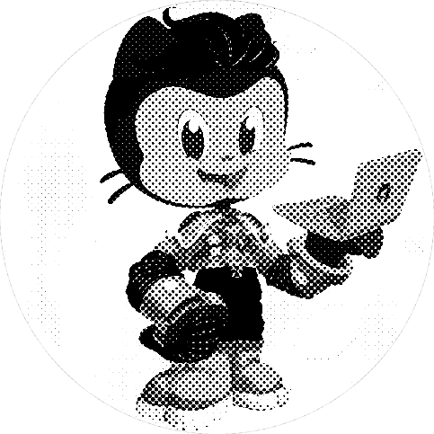
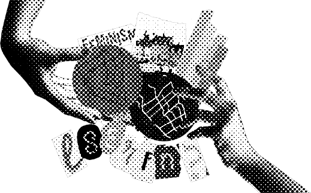

.leticia-cardoso
{ página pessoal: currículo + portfolio }
sou uma rebelde nata
por isso eu, mulher parda da RMSP, estou na área tech.
minha habilidade analítica e visão interdisciplinar me tornam uma problem solver, movida à desafios e em prol de uma causa: emancipar pessoas.
.sobre
- após me formar em arquitetura em 2020, busquei algo que me aproximasse do que sempre fui apaixonada, mas tive medo de investir: tecnologia.
- comecei a transição de carreira em 2021 com o curso de back-end da {reprograma} e segui meus estudos de maneira independente até iniciar, em 2022, um curso de front-end no mesmo lugar.
- como desenvolvedora full stack busco ter uma visão total do desenvolvimento web e aumentar meus conhecimentos nas linguagens Nodejs e React.
- acredito que por esse caminho vou conseguir realizar um sonho antigo: minha independência financeira.
educacional
.2015-2020 {graduação em arquitetura e urbanismo}
.2021 {curso intensivo back-end}
.2022 {curso intensivo front-end}
.currículo
profissional
.2012_2013 {banprint copiadora e lan-house}
estágio atendimento ao cliente + controle de caixa + manutenção de computadores + orientação em informática básica
.2015_2020 {fundação richard hugh fisk}
estágio / assistente atendimento à franqueados + projetos de arquitetura educacional + apresentação/diagramação
.2020_2022 {usina CTAH}
estágio / arquiteta assessoria técnica à movimentos sociais + projetos/obras edifícios habitacionais + orçamento + apresentação/diagramação + confecção de mapas + acompanhamento de mutirão

{ acesse meu github }
.portfolio

{ e se essas ruas fossem nossas? }
acesse a API que registra memórias de mulheres cis/trans no território urbano com a finalidade de coletar dados para um futuro mapeamento coletivo.